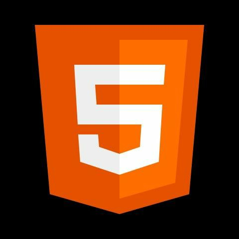
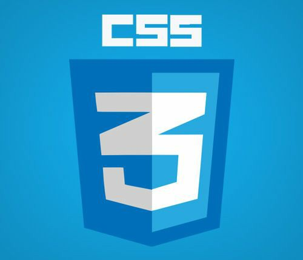
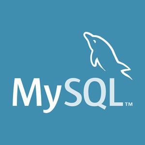

Hola, soy Mahia Umbarila, una desarrolladora web en crecimiento. Actualmente estoy cursando con Enyoi y explorando mas sobre el mundo del desarrollo web.
Comencé en el mundo del desarrollo web gracias a mi círculo familiar, quienes me compartían el aprendizaje adquirido en sus estudios y trabajos, lo que despertó mi interés por el desarrollo. Empecé con cursos en plataformas como Udemy y realicé ejercicios y proyectos básicos para poner en práctica los conocimientos que iba adquiriendo, siempre con el acompañamiento y apoyo de personas con más experiencia. Para mantener la motivación, elegí temas que me apasionaran, lo que hizo que mi aprendizaje fuera más emocionante. Algunos de los temas que he explorado incluyen:
 HTML: Aprendí a crear la estructura básica de una página web, desde las etiquetas más comunes hasta la implementación de formularios y elementos interactivos.
 CSS: Estoy trabajando en cómo darles estilo a mis proyectos, aprendiendo a usar layouts, colores, tipografías y efectos para hacer mis páginas más atractivas y funcionales
 JavaScript: Descubrí cómo agregar interactividad a mis proyectos, manipulando eventos, validando formularios y trabajando con APIs.
JavaScript: Descubrí cómo agregar interactividad a mis proyectos, manipulando eventos, validando formularios y trabajando con APIs.
 MySQL: Adquirí lo básico de MySQL, aprendiendo a crear bases de datos eficientes y bien normalizadas. También trabajé con tablas, selectores, y comprendí la importancia de las llaves primarias y foráneas, además de aprender sobre las relaciones entre tablas.
Quiero hacer proyectos mas complejos utilizando frameworks y bibliotecas como Express.js y React. Además, me esfuerzo por mantenerme actualizada con las últimas tendencias y buenas prácticas en el mundo de la programación.